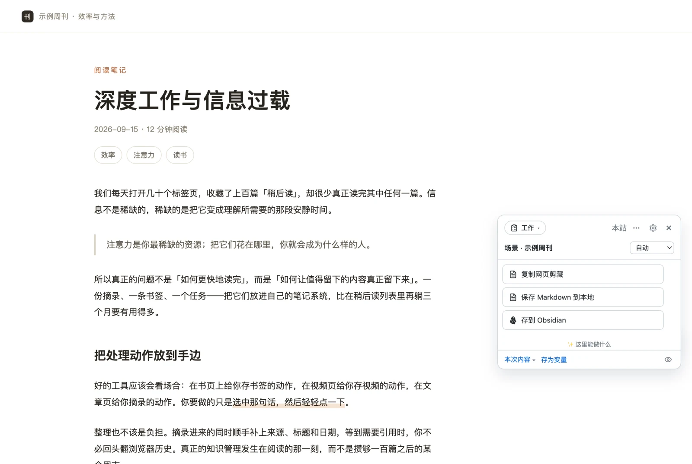

复制、切窗口、粘贴、清样式
选中正文、复制、切到 Obsidian、找文件夹、新建笔记、粘贴，再把页面自带的样式和导航残渣删掉。一篇长文下来，人已经不想读了。
用例 · Obsidian
顺手是一个浏览器扩展（也有油猴脚本）。读到一篇值得留的文章，点一下「存到 Obsidian」——
正文按 Markdown 写进你的库，走 Obsidian 官方的 obsidian:// 深链，
不经过任何服务器。库内路径可以配子目录与日期，写完默认不跳出笔记、不打断你。
零服务器 · 不用装 Obsidian 插件 · 填一次库名即可

为什么麻烦
Obsidian 本身很舒服，麻烦的从来是外面那一段路。
选中正文、复制、切到 Obsidian、找文件夹、新建笔记、粘贴，再把页面自带的样式和导航残渣删掉。一篇长文下来，人已经不想读了。
想让笔记能按来源、日期、作者检索，就得手写 YAML——标题、链接、抓取时间，每次重复一遍，还容易写错格式。
这一篇放「收集/2026-10」，那一篇放「稍后读」，几个月后自己都找不到；想按日期分文件夹又得手动建。
读到好句子想记下来，切窗口、找日记、粘贴——等回来已经忘了刚才读到哪，或者干脆懒得记了。
正文识别不准时，导航栏、推荐位、「相关阅读」全进来了；评论区还带着头像和点赞按钮，粘进笔记要再删一遍。
攒了十几篇要存，只能一篇篇点开、复制、粘贴——中间还得记住哪篇存过、哪篇没存。
怎么搭
不用装 Obsidian 插件，也不用填 API。顺手走的是 Obsidian 官方的 obsidian:// 深链——
和官方 Web Clipper 用的是同一个协议，本机装着 Obsidian 就行。
在动作参数里填你的库名（留空就用当前库）。不用找 API Token，也不用开什么开关。
默认是 顺手/{{date:YYYY-MM-DD}}/{{title}}，也就是「顺手/2026-10-11/文章标题」。想怎么分就改成什么模板。
在文章页点「存到 Obsidian」。写完默认不跳出笔记；想写完看一眼，把「静默写入」关掉即可。
第一次点会弹出浏览器的「打开 Obsidian？」确认框——勾上「总是允许」以后就不再问了。 这是浏览器的协议放行机制，不是顺手在要权限。
在配置台里
动作不是一个写死的按钮：内容模板、库内路径、同名笔记怎么处理，都在配置台里改，改错一键撤销。
默认给的是网页剪藏（{{page.markdown}} + 来源链接）；也能换成正文、划选，或自己拼一段模板——
想加 frontmatter 就写进去。
{{date:YYYY-MM-DD}}、{{title}}、{{hostname}} 都能用；
例如 收集/{{date:YYYY}}/{{hostname}}/{{title}}，按年份和站点自动分目录。
新建（或打开已有）/ 追加到末尾 / 覆盖——同一篇文章补记第二次时，「追加」比再存一份好。
默认打开：写完不跳出笔记窗口，不打断你正在做的事。关掉它就会在 Obsidian 里打开刚存的那篇。
「存到 Obsidian」和这个站点的其它动作并列在同一个面板里—— 不用为了存笔记去开另一个扩展，也不用记住它在哪个菜单。
没装 Obsidian？
深链方案要求本机装着 Obsidian。没装（或不想装）时，用另一个动作把正文存成 .md 文件——
路径模板一样支持变量与子目录，把下载目录指到你的库文件夹就是同一个效果。
差别只有一个：深链是 Obsidian 直接落盘、不会在下载目录留副本；文件方式是先下载再由你（或系统）放进库。
默认 顺手/{{date:YYYY-MM-DD}}/{{title}}.md，也可以改成任何子目录结构；文件名里的非法字符会自动清洗。
默认自动编号、不覆盖；装了「管理下载」权限后也可以选覆盖。文件只写进你自己的下载目录。
Markdown / 纯文本 / 按产物扩展名自动判断；分享图这类图片产物也能保存成本地文件。
可以用「接着做」把两件事串成一次点击：存到 Obsidian，接着把「《标题》 链接」复制到剪贴板。
和官方 Web Clipper 的关系
Obsidian 官方 Web Clipper 专门做「网页 → Obsidian」，做得很好，模板与触发器都在它自己的设置里。 顺手是一个站点感知的动作台——「存 Obsidian」是它在这个站点上的动作之一。
两者不冲突，可以都装。
| 关心的点 | Obsidian 官方 Web Clipper | 顺手 |
|---|---|---|
| 定位 | 专门的网页剪藏工具 | 站点感知的动作台：剪藏只是这个站点上的一组动作之一 |
| 写入方式 | obsidian:// 深链 |
同一条深链（协议一致，填一次库名即可） |
| 同一面板里还有 | 只有剪藏 | 存虎鲸 / 思源、出分享图、划词翻译、网页操作、元素截图… |
| 正文认不准 | 跟随自身的正文识别 | 在页面上点选容器并「存为规则」；评论区走列表原语逐条取 |
| 自动运行 | — | 打开匹配页面就替你存（默认关、逐个开、可设执行前询问） |
| 多个落点 | Obsidian | Obsidian / 本地 Markdown / 虎鲸 / 思源，可用动作链一次写多个 |
常见玩法
给某类页面设成打开就自动存——比如你自己的博客后台、某个固定栏目的文章页。浏览即入库，一次点击都不用。默认关闭、逐个动作开启，还能设「执行前询问」。
不用整页。选中一段话，浮条上的动作把这句话追加进当天的笔记——读到哪记到哪，不离开页面。
划选点「高亮」，标注留在页面上（刷新还在、不改页面结构）；读完整页，把这一页的高亮一次性写进库。
看到一句就点「加入暂存」，攒够了在面板顶部的暂存区里一次全部写进库——不用一段一段点。球上会有计数角标提醒你。
用「接着做」把两件事串起来：存进库，接着把「《标题》 链接」复制到剪贴板，粘到聊天窗口或待办里。
外文长文先用浏览器内置的端上翻译译成中文（零配置、不花钱、文本不出本机），译文先在气泡里给你看，满意了再写进库。
常见问题
不需要，也不用装 Obsidian 的 Web Clipper 插件。顺手走的是 Obsidian 官方的 obsidian:// 深链——和官方 Web Clipper 用的是同一个协议，本机装了 Obsidian 就能用，配置里填一次库名即可（留空表示当前库）。
官方 Web Clipper 专门做「网页 → Obsidian」，模板与触发器都在它自己的设置里。顺手是一个站点感知的动作台：同一个面板里，这个站点的剪藏动作、存 Obsidian、存虎鲸 / 思源、出分享图并列；剪藏的正文范围可以在页面上自己点选并存成规则，也能把一条动作设成自动运行（打开匹配页面就替你存）。
两者不冲突，可以都装。
库内路径支持子目录与变量，默认是 顺手/{{date:YYYY-MM-DD}}/{{title}}，即「顺手/2026-10-11/文章标题」。
可以自己改成任意模板，例如 收集/{{date:YYYY}}/{{hostname}}/{{title}}；同名笔记可选择新建（或打开已有）、追加到末尾、覆盖三种处理方式。
默认不会。动作里的「静默写入」是打开的，写完不跳出笔记；想要写完看一眼就把这个开关关掉。
能，但走的是另一条路：动作里还有「保存 Markdown 到本地」，把正文存成 .md 文件（路径同样支持变量与子目录，如 顺手/{{date:YYYY-MM-DD}}/{{title}}.md），你把下载目录指到库文件夹即可。
装了 Obsidian 的话，深链方式更直接、也不会在下载目录留副本。
剪藏里保留的是原图链接（Markdown 语法），图片本身仍在原站。想要本地化图片，可以用「保存 Markdown 到本地」后再配合 Obsidian 的本地化插件处理。
免费使用，没有广告，也没有需要付费解锁的功能；不需要注册任何账号。内容不经过任何服务器——深链直接交给本机的 Obsidian 落盘。
安装
商店装的两家都会自动更新；油猴脚本适合手机或不想装扩展的场景。
桌面首选，装好即自动更新。
与 Chrome 同一内核，功能一致。
先装脚本管理器（Tampermonkey / Violentmonkey；Android 用 Firefox，iOS 用 Safari + Userscripts），再装脚本。